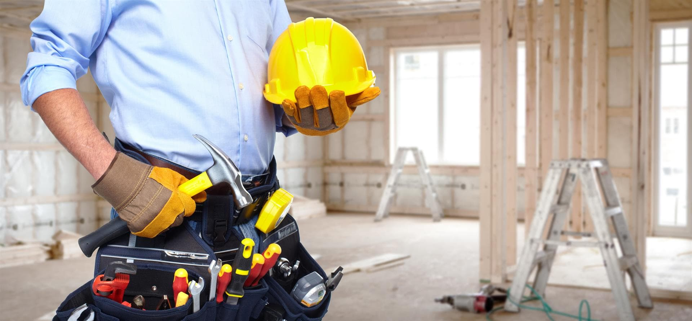

Situació tecnològica actual:
L'empresa utilitza processos manuals. Els pressupostos es fan en paper o Excel bàsic, i la comunicació amb els paletes a peu d'obra és via WhatsApp o trucades. No hi ha centralització de dades.
Problemes clau: Pèrdua d'informació: Albarans de material que es perden o no es comptabilitzen. Desviament de costos: Diferència entre el pressupostat i el cost real per falta de seguiment en temps real. Lentitud administrativa: Massa hores dedicades a facturació manual.
- Riscos: Seguretat: Pèrdua de dades de clients (LOPD) per no tenir còpies de seguretat al núvol. Gestió de dades: Duplicitat de factures i errors en el càlcul d'impostos. Competitivitat: Altres empreses ofereixen pressupostos més ràpids i seguiment digital que nosaltres no podem oferir.
